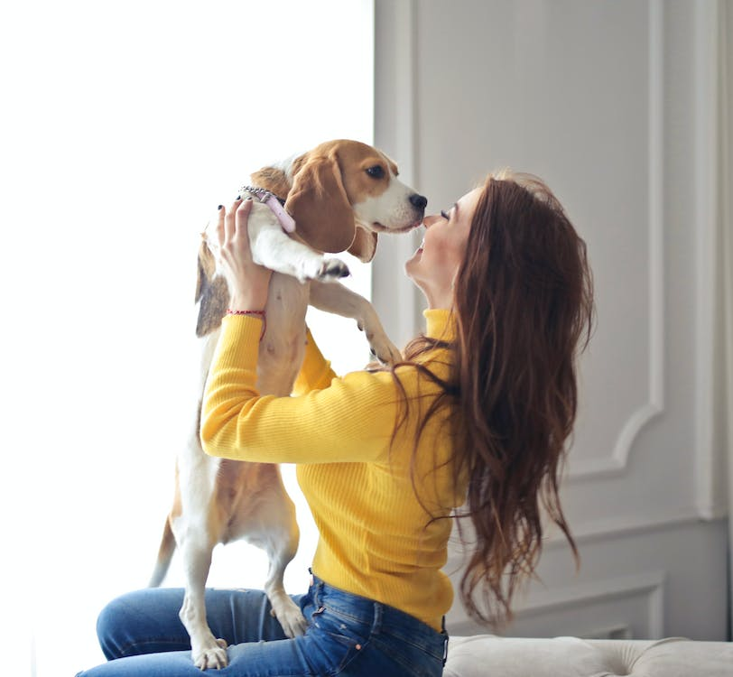

Razas de Perros Que son interesantes

Estos son los perros mas interesantes en el internet:
Estos perros son muy interesantes y por esa misma razon son populares en internet,son perros que mucha gente tiene en su mente a la hora de elegir uno como mascota, a la hora de adoptar hay mucha gente que es celectiva en esto, pero tambien hay quienes escojen a estas adorables creaturas por su belleza cabe destacar que tambien hay productos que segun las grandes empresas son los mas recomendables, saludables e incluso potenciadores para tus mascotas te las estaremos presentando aqui tambien.
Labrador Retriever

El Labrador Retriever es una raza de perro muy interesante y popular. Aquí hay algunos datos interesantes sobre ellos:
El Labrador Retriever es una raza de perro muy interesante y popular. Aquí hay algunos datos interesantes sobre ellos:
- El Labrador Retriever ha sido la raza de perro más popular en los Estados Unidos durante 31 años.
- Los labradores retriever son una raza muy interesante. Son originarios de Terranova.
- Son perros nobles, hermosos y muy inteligentes, apropiados para todo tipo de familias.
- Los Labrador Retrievers son conocidos por su naturaleza amigable, tranquila y afectuosa hacia todos.
- Son animales sociables y flexibles que se llevan bien con otros animales y niños.
- Son increíblemente leales y les encanta sentirse incluidos en la familia en todos los niveles.
- estos perros comen una comida
El labrador es uno de los perros mas fieles y honorables conocidos no se puede evitar pensar en estos como los mejores amigos y segun estadisticas uno de los mas vendidos y adoptados en el mercado es una de las razas de perros más populares del mundo, también conocido como Labrador. Es una raza originaria de Terranova, ahora Canadá 1. El Labrador es un perro grande con una constitución fuerte y musculosa y una buena estructura ósea y muscular. Tiene una cabeza ancha y un aspecto dulce e inteligente. Su cola, similar a la de las nutrias, es única. El pelaje es corto y denso y puede ser negro sólido, amarillo o marrón.
Golden Retriever

Los perros Golden Retriever tambien son una raza de perros bastante populares. Aqui algunos datos sobre ellos:
La raza de perro Golden Retriever, puedo decirte que son perros muy versátiles y conocidos por ser perdigueros, mascotas de familia,
perros de apoyo para discapacitados y perros de búsqueda y rescate. Son juguetones, cariñosos y de temperamento apacible. Los machos miden
entre 58 y 62 cm y pesan entre 29 y 32 kg. Las hembras miden entre 53 y 55 cm y pesan entre 25 y 29 kg.
- El tamaño promedio de una camada de Golden Retriever es de 8 cachorros y pueden variar de 4 a 12 cachorros.
- Los Golden Retrievers crecen hasta su tamaño completo alrededor de un año de edad y pierden sus dientes de leche alrededor de los 4 meses.
- Los Golden Retrievers son perros trabajadores y se utilizan para todo, desde caza y rastreo hasta rescate y trabajo de perros de servicio.
- También son excelentes perros de terapia debido a su empatía y amor incondicional.
¿Hay algún aspecto en particular sobre los Golden Retrievers que te gustaría conocer más?
Los perros Golden Retriever tambien son una raza de perros bastante populares. Aqui algunos datos sobre ellos:
La raza de perro Golden Retriever, puedo decirte que son perros muy versátiles y conocidos por ser perdigueros, mascotas de familia, perros de apoyo para discapacitados y perros de búsqueda y rescate. Son juguetones, cariñosos y de temperamento apacible. Los machos miden entre 58 y 62 cm y pesan entre 29 y 32 kg. Las hembras miden entre 53 y 55 cm y pesan entre 25 y 29 kg.
¿Hay algún aspecto en particular sobre los Golden Retrievers que te gustaría conocer más?
Bulldog

Los Bulldog son perros musculosos y "maleables" que son agradables para la mayoria de las personas. Aqui unos datos interesantes sobre ellos:
Los Bulldogs son una raza de perro originaria de Inglaterra y desarrollada hace siglos para su uso en la lucha contra toros (bullbaiting).
Los Bulldogs son perros de tamaño mediano, musculosos y con un peso de alrededor de 18-25 kg. Tienen cabezas grandes con pliegues gruesos de
piel alrededor de la cara y los hombros, y una cara relativamente plana con una mandíbula inferior sobresaliente.
- Son poderosos y valientes, a menudo viciosos y en gran medida inconscientes del dolor.
- Los Bulldogs casi desaparecieron cuando las peleas de perros fueron prohibidas en 1835, pero los aficionados a la raza la salvaron y criaron para eliminar su ferocidad.
- Por ejemplo, el nombre de la raza proviene del deporte del bullbaiting, en el que se animaba a los perros a intentar morder el hocico de un toro.
- Los Bulldogs no son buenos nadadores debido a su cuerpo denso y sus patas cortas.
- También son conocidos como “El perro Churchill” debido a que el Primer Ministro Winston Churchill y el Bulldog inglés simbolizaban la valentía y la fuerza de Inglaterra durante la Segunda Guerra Mundial.
Los Bulldog son perros musculosos y "maleables" que son agradables para la mayoria de las personas. Aqui unos datos interesantes sobre ellos:
Los Bulldogs son una raza de perro originaria de Inglaterra y desarrollada hace siglos para su uso en la lucha contra toros (bullbaiting). Los Bulldogs son perros de tamaño mediano, musculosos y con un peso de alrededor de 18-25 kg. Tienen cabezas grandes con pliegues gruesos de piel alrededor de la cara y los hombros, y una cara relativamente plana con una mandíbula inferior sobresaliente.